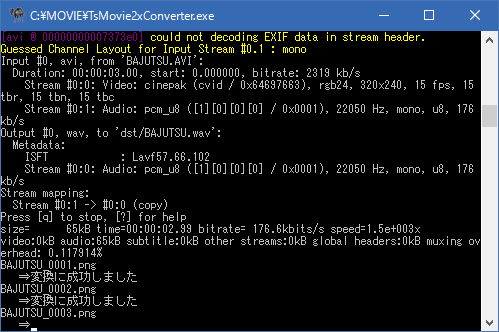
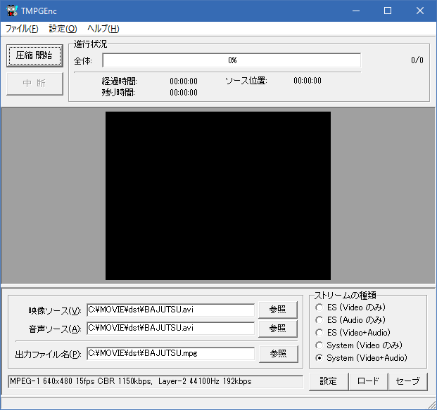

TsMovie2xConverter によって ２倍化されたサンプル

天翔記では、ゲームの機能で「ムービーを２倍のサイズで再生」の設定を有効にしたとしても、
アンチエイリアスも効かない上、元のムービーも画質が悪いため、結構ひどい状態で再生されてしまいます。
このページでは、画像を拡大するツールとして非常に有名な、「waifu2x-caffe」を使い、
解像度をアップコンバートすることで、 ある程度、この問題への解決を狙います。
通常の「Adore PremiereやAdobe AfterEffectsなど映像ツールで解像度を２倍にする」といった一般的手法とは違い、
「高度で多計算による解像度の２倍化」となりますので、変換には相当時間がかかります。
なお、ここに記載されている内容やツールは、天翔記に限定されるものではなく、
「動画の解像度を綺麗な形で２倍にする」という汎用的な目的にもかなうモノとなっています。
Windows 7 64bit 以降が必要です。(32bitだと無理です)
これらのムービーを天翔記で有効に機能させるためには、TSModが必要です。
(素の天翔記や神パッチの天翔記では、ムービーの解像度を大きくしたとしても、表示は大きくなりません)
FFmpeg/FFprobe をインストールしてください。
まずは、該当ページからffmpegをダウンロードします。
「ffmpeg-N-*****-*********-win64-gpl.zip」
を解凍すると、実はファイルやディレクトリが沢山あります。
しかし、必要なのファイルは「bin」フォルダの中にある「ffmpeg.exe と ffprobe.exe」の２つだけです。
このffmpeg.exeを適当なツールっぽいフォルダに移動し、以後これを利用するようにします。

この２つを適当なフォルダにコピーしてください。
有名なコマンドアプリケーションですので、それなりのディレクトリにコピーしておくことをお勧めします。
waifu2x-caffe
をインストールしてください。
インストールの詳細は、画像の縮小・拡大に掲載しています。
全体で100メガを超えるファイルサイズのツールですが、サブディレクトリも含め、ディレクトリ一式必要です。
2015年以降、急速に有名になったアプリケーションですので、
それなりのディレクトリにコピーしておくことをお勧めします。
天翔記95(等)の動画を２倍に拡大コンバートするツールとなります。
(実際には天翔記に限らず汎用目的で利用可能です)
映像については、waifu2x-cafeeを通して解像度を２倍化し、lib264のロスレスで、
音声については、元の動画の音声そのままのデータをコピーするようなツールです。
TsMovie2xConverterの置き場所は好きなディレクトリに配置してもらって良いのですが、
今回は説明のために、「C:\MOVIE」フォルダに置いたものとします。
TsMovie2xConverter.iniをテキストエディタで編集してください。
この.iniファイルが正しく編集されていないと全く動作しません!!
# ffmpegのフルパスを設定してください。
$ffmpeg = 'C:\usr\ffmpeg\ffmpeg.exe';
$ffprobe = 'C:\usr\ffmpeg\ffprobe.exe';
# waifu2x-cafee-cuiのフルパスを設定してください。
$waifu2x = 'C:\usr\waifu2x-caffe\waifu2x-caffe-cui.exe';
# gpuが使えるのは、NVIDIA製GPUのみです。IntelやRadeonの人は "cpu" と書き換えてください。
$process = "gpu";
# コンバートする拡張子
$extension = ".avi";
天翔記のCDから動画ファイルをコピーしてきてください。
(ゲーム側にすでにMOVIEディレクトリがあるなら、そちらからコピーしてきてもかまいません)
↓(動画ファイルをコピー)
「TsMovie2xConverter.exe」を実行してください。
ツールの導入や、iniの設定が正しければ、以下のように変換が始まります。

「C:\MOVIE\dst」のフォルダに変換後のムービーが出来上がります。
この出来上がったムービーはヘッダ情報が健全ではないため、「GOM Player」や「VLC Player」では再生できますが、
マイクロソフトの標準のプレイヤでは再生できません。
これを健全な状態にするために、次ステップへと進んでください。
TsMovie2xConverterを使って、ffmpegで変換したファイルだと、ヘッダ情報が健全ではないため、
天翔記では再生できません。
天翔記で再生できるようにするため、TMPGEncで動画を再変換します。
(TMPGEncに限らず、ある程度Windowsに特化した動画変換ツールであれば概ねどれでも利用できます。)
TMPGEnc
Xvid
mp3
をインストールしてください。
インストールの詳細は、天翔記で利用可能な.AVIフォーマットへの変換方法に掲載しています。
をインストールしてください。
ダウンロード先は、https://ja.osdn.net/projects/sfnet_x264vfw/です。
↓ (BAJUTSU.AVIをTMPGENCの画面にドラッグ＆ドロップ)



今回の動画の拡大処理では、コーエーロゴについては、あまり良い感じに変換されないことが分かっています。
(文字がゆがんだような感じに見える)
オープニングロゴや、エンディングロゴは、以下のものへと差し替えた方が良いでしょう。
オープニングのロゴとエンディングのロゴ